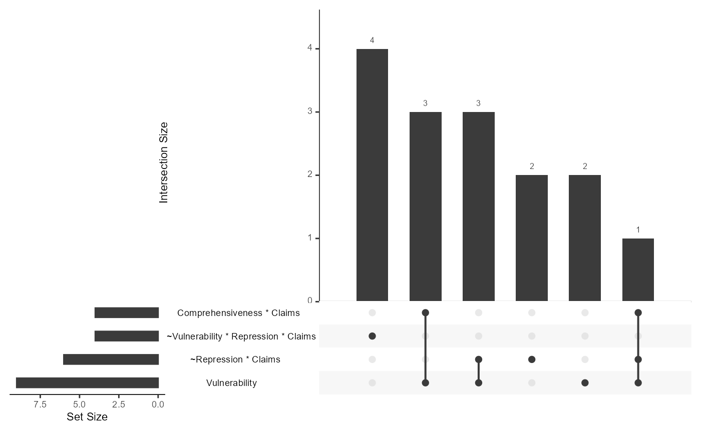

Aggregation of individual configurations over partition-specific models
Source:R/upset_configurations.R
upset_configurations.RdModels that have been derived for individual partitions are first decomposed into sufficient terms, that is single sufficient conditions or configurations. The individual terms are aggregated using UpSet plots to determine how frequent they are individually and in combination.
Value
An UpSet plot produced with upset.
Examples
# load data from Grauvogel (2014; see data documentation)
data(Grauvogel2014)
GS_pars <- partition_min(
dataset = Grauvogel2014,
units = "Sender",
cond = c("Comprehensiveness", "Linkage", "Vulnerability",
"Repression", "Claims"),
out = "Persistence",
n_cut = 1, incl_cut = 0.75,
solution = "P",
BE_cons = rep(0.75, 3),
BE_ncut = rep(1, 3))
upset_configurations(GS_pars, nsets = 4)
